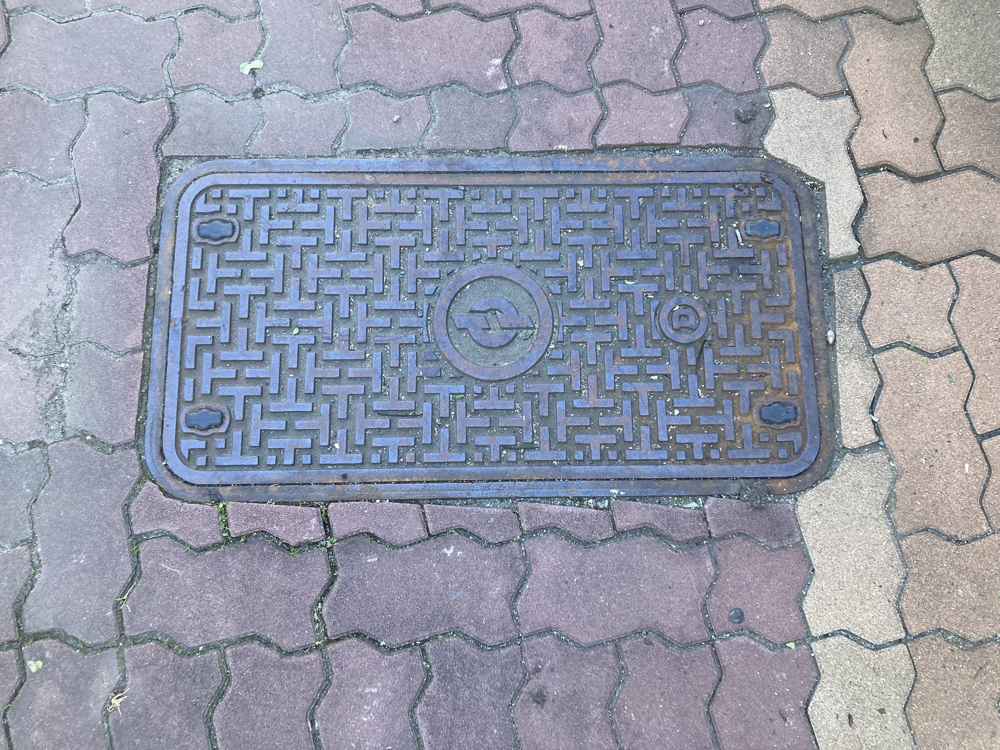

【理解されない変わった趣味】
2026/10/18
趣味って何だろう？
皆さん、誰にも理解されない趣味はありますか？（唐突）
私は・・・それなりにありますねぇ。
例えば、このブログを見ている方々なら当たり前のように知っているであろうカメラ・写真機趣味。
それらを包括的にしたような古物。骨董趣味。義務教育下だとほぼメインだった歴史趣味。
歴史趣味を大いに強化し、そもそもの歴史趣味の大いなる母、読書趣味。
まぁ、ここまではまぁ理解してくれるというか、言語化が容易い者どもばかりである。
だがここからは結構言語化が難しいものなんですよねぇ～。
まずは”マンホール蓋収集趣味”。どういうことかというと
写真
こういうのを集めるということである。え？となるのが普通であるのだが・・・。
ちょっと意味が分からいないと言うことで、補足というか”言い訳”をしておこう。
元々はそんな趣味ありませんでした。ですけど、三公社五現業(電電公社)が気になりだし、謎のテンションで
怪文書を発酵させたくらいいは、好きになりました。
で、Wikipediaをもちろん漁るわけなんですけど、そしたら解説とかそこらへんに「公社章の入ったマンホールがある」
との記載があったんですね。で、「いつか見てみたいなぁ」と思っていたら、なんとたまたまソレを発見。
